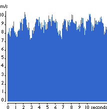
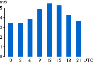

Wind Speed Variability

Short
Term Variability of the Wind
 The wind speed is always fluctuating, and
thus the energy content of the wind is always changing.
The wind speed is always fluctuating, and
thus the energy content of the wind is always changing.
 Exactly how large the variation is depends
both on the weather and on local surface conditions and obstacles.
Exactly how large the variation is depends
both on the weather and on local surface conditions and obstacles.
 Energy output from a wind turbine will vary
as the wind varies, although the most rapid variations will to
some extent be compensated for by the inertia of the wind turbine
rotor.
Energy output from a wind turbine will vary
as the wind varies, although the most rapid variations will to
some extent be compensated for by the inertia of the wind turbine
rotor.
Diurnal
(Night and Day) Variations of the Wind
 In
most locations around the globe it is more windy during the daytime
than at night. The graph to the left shows how the wind speed
at Beldringe, Denmark varies by 3 hour intervals round the clock.
(Information from the European Wind Atlas).
In
most locations around the globe it is more windy during the daytime
than at night. The graph to the left shows how the wind speed
at Beldringe, Denmark varies by 3 hour intervals round the clock.
(Information from the European Wind Atlas).
 This variation is largely due to the fact
that temperature differences e.g. between the sea surface and
the land surface tend to be larger during the day than at night.
The wind is also more turbulent and tends to change direction
more frequently during the day than at night.
This variation is largely due to the fact
that temperature differences e.g. between the sea surface and
the land surface tend to be larger during the day than at night.
The wind is also more turbulent and tends to change direction
more frequently during the day than at night.
 From the point of view of wind turbine owners,
it is an advantage that most of the wind energy is produced during
the daytime, since electricity consumption is higher than at
night. Many power companies pay more for the electricity produced
during the peak load hours of the day (when there is a shortage
of cheap generating capacity). We will return to this subject
in the section on Wind Turbines in
the Electrical grid.
From the point of view of wind turbine owners,
it is an advantage that most of the wind energy is produced during
the daytime, since electricity consumption is higher than at
night. Many power companies pay more for the electricity produced
during the peak load hours of the day (when there is a shortage
of cheap generating capacity). We will return to this subject
in the section on Wind Turbines in
the Electrical grid.
Seasonal
Variations of the Wind
We treat this subject in the section on Wind
Turbines in the Electrical grid.
© Copyright 1999 Soren Krohn. All rights reserved.
Updated 6 August 2000
http://www.windpower.org/tour/wres/variab.htm